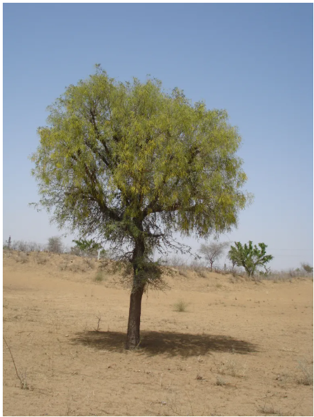

2. State Tree: Jammi (Bassia latifolia)
Scientific Name: Bassia latifolia.
Cultural Significance: The Jammi tree is deeply rooted in Telangana's culture and is often associated with the goddess Durga. It is commonly planted in temples and homes, symbolizing strength and resilience.
Ecological Importance: This tree is drought-resistant and thrives in arid conditions, making it ideal for the semi-arid climate of Telangana. It provides shade and serves as a habitat for various birds and insects.
Traditional Uses: The wood of the Jammi tree is used in construction and furniture making. Its leaves are used in traditional medicine to treat various ailments, including fever and digestive issues.